Gid pou Jennifer — pou mete yon spa, salon, kwafè/barbye, klinik, konsiltan oswa fòmasyon sou randevou.
Kreye magazen an sou MyPlopPlop jan ou toujou fè l, men chwazi kategori ✂️ Salon / Barbye / Spa, 🩺 Klinik / Sante oswa 📅 Lòt sèvis. Ajoute sèvis yo kòm pwodwi (non, pri, foto, epi dire a nan deskripsyon an, egz. "30 minit"). Apwouve l nan konsòl machann yo.
Nan konsòl machann yo (machann-admin), sou kat biznis la, peze "📅 Kòd randevou". Yon kòd 8 lèt ak yon lyen parèt. Kòd la parèt YON SÈL FWA: ekri l. Bay biznis la kòd la an prive.
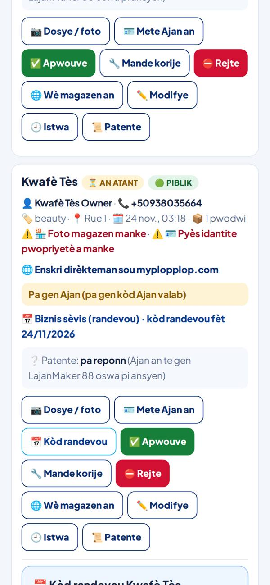
Louvri lyen an (tikelakay.com/create-event.html?store=…). Tape kòd randevou a nan kare ble a, epi kreye jou a jan seksyon B pi ba a eksplike (chak LÈ = yon tikè ak 1 plas). San bon kòd la, Tikè Lakay refize: pèsonn pa ka kreye fo randevou sou non biznis la.
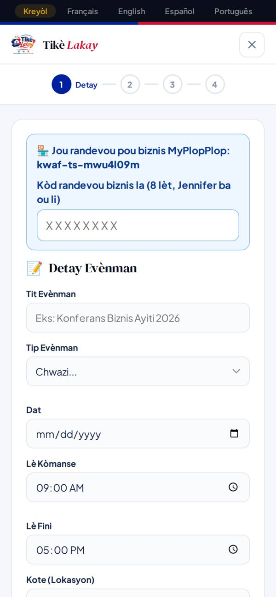
Lòt jou yo: sou tikelakay.com → KONT → paj jou a → "📋 Kopye pou yon lòt jou". Tout lè ak pri yo kopye; ou chwazi sèlman nouvo dat la (epi chanje jou a nan tit la). Paj ki kopye a rete konekte ak magazen an.
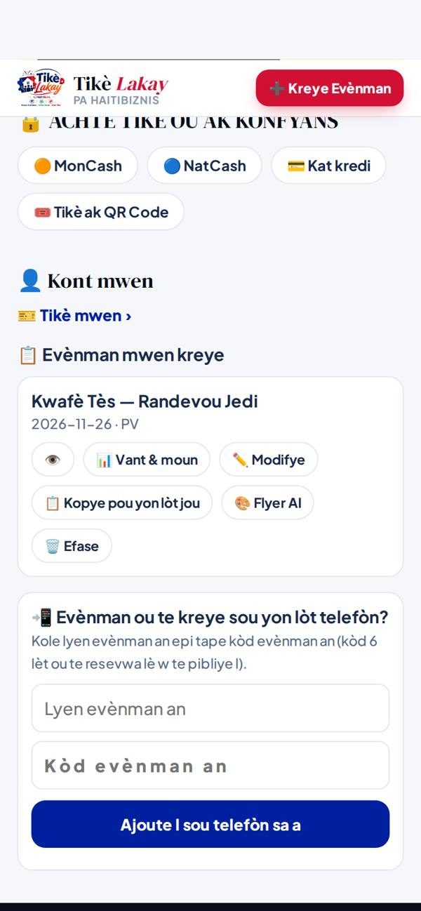
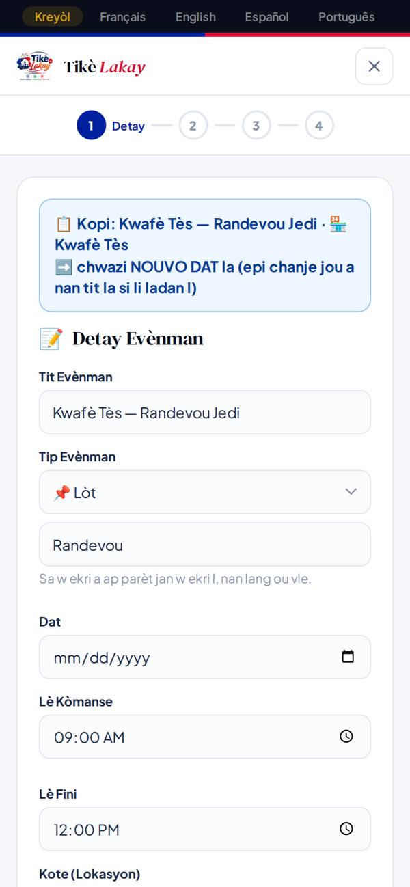
Kliyan an: li louvri magazen an sou MyPlopPlop → "📅 Pran Randevou" → li wè jou yo ak lè ki lib yo → li peze yon lè → paj Tikè Lakay louvri pou l peye (rès la menm jan ak seksyon C).
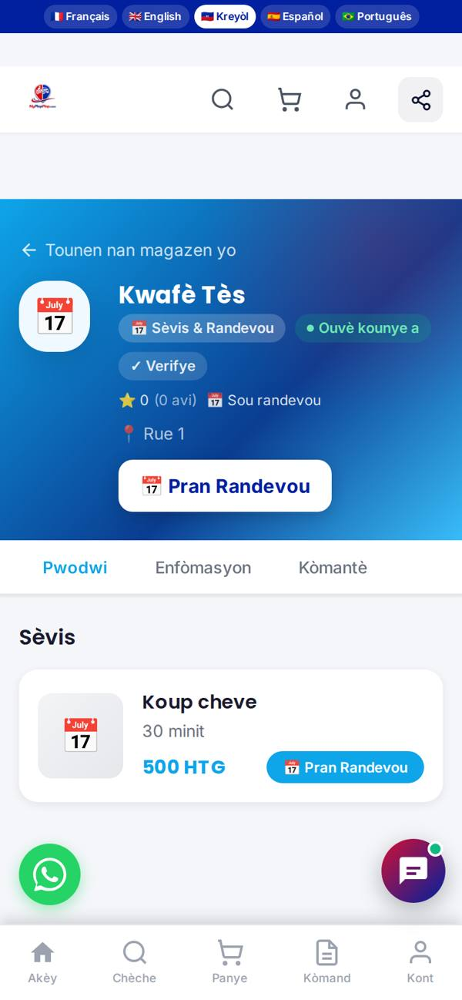
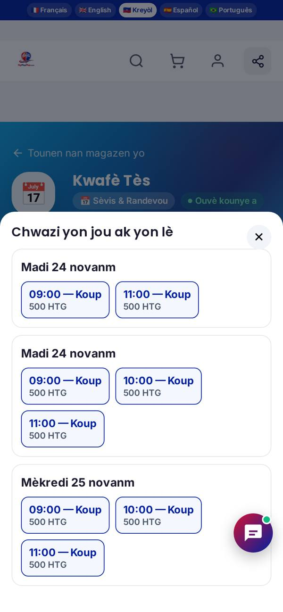
Louvri tikelakay.com → Kreye → chwazi "Kreye Manyèlman".
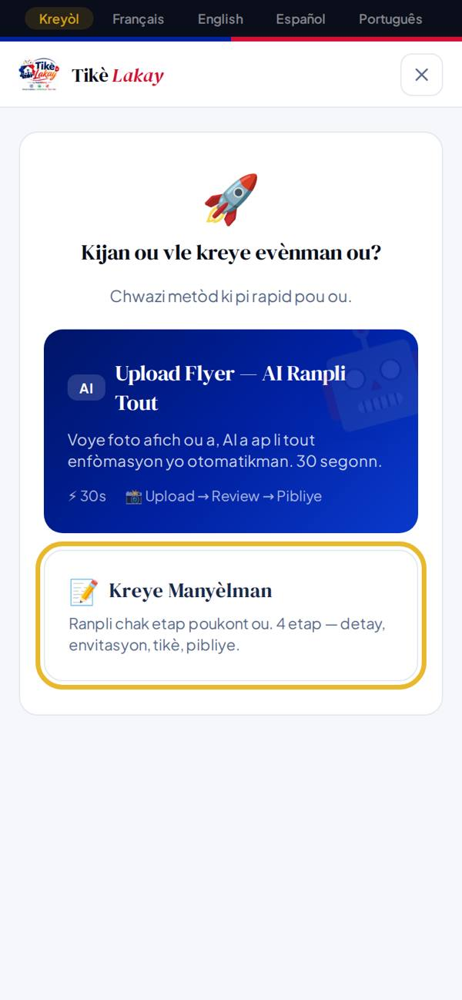
Detay:
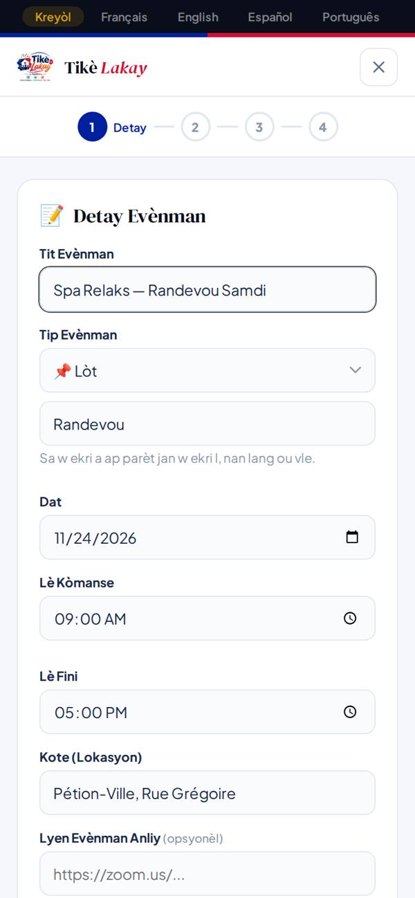
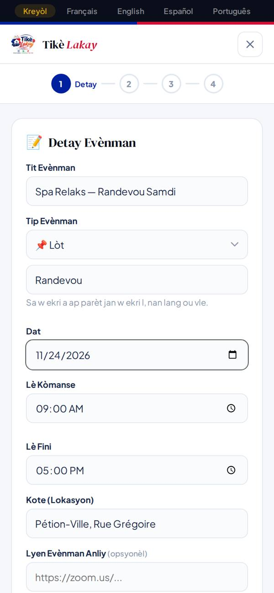
Tikè = LÈ yo. Fè yon tikè pou chak lè (bouton "+ Ajoute yon Tikè"):
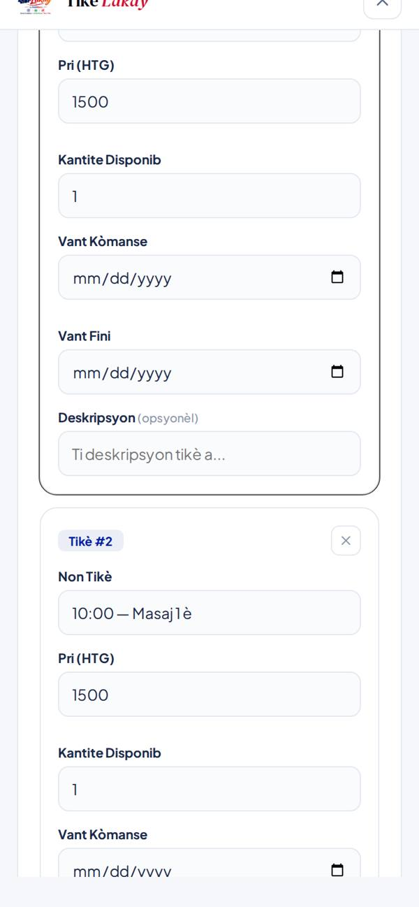
Randevou "peye sou plas": mete Pri 0 (li parèt GRATIS sou sit la, biznis la kolekte lajan an li menm).
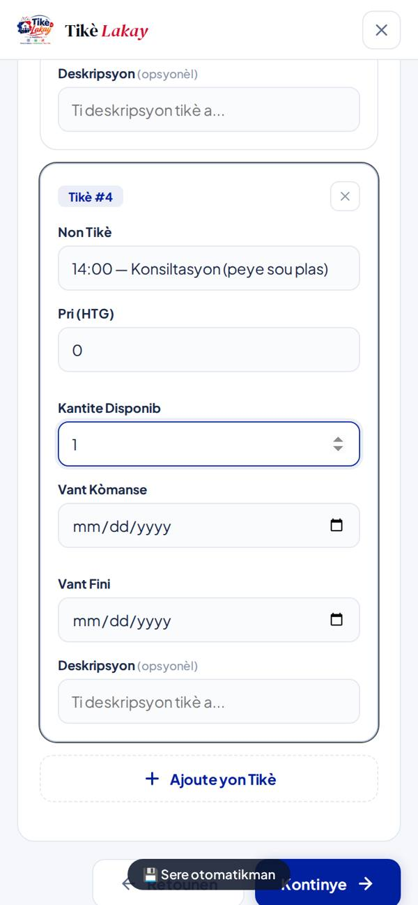
Peman: tcheke MonCash, NatCash ak Kat, epi mete nimewo MonCash biznis la. Kite "Parenaj Biznis Referral" limen pou Ajan an touche komisyon li.
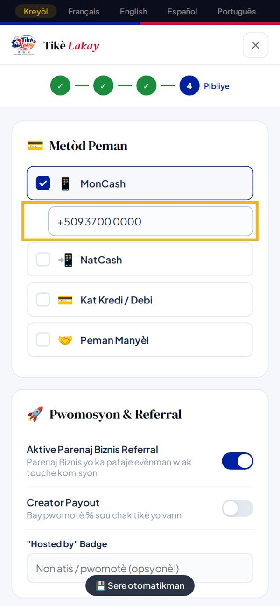
Gade Rezime a: kantite tip = kantite lè, kapasite = menm kantite plas (egz. 4 lè → 4 plas). Peze "Pibliye Evènman".
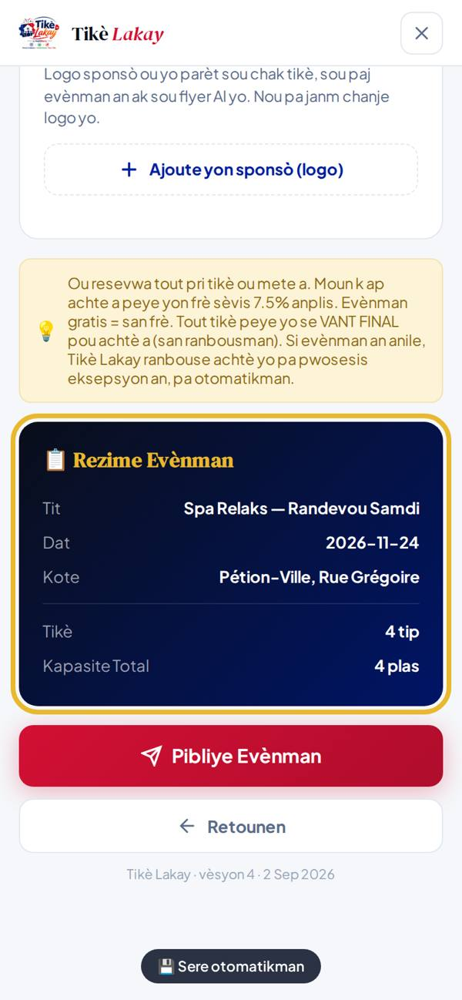
Yon KÒD EVÈNMAN (6 lèt) parèt. Kopye l epi bay biznis la an prive ak lyen paj la: se ak li yo wè lis randevou yo.
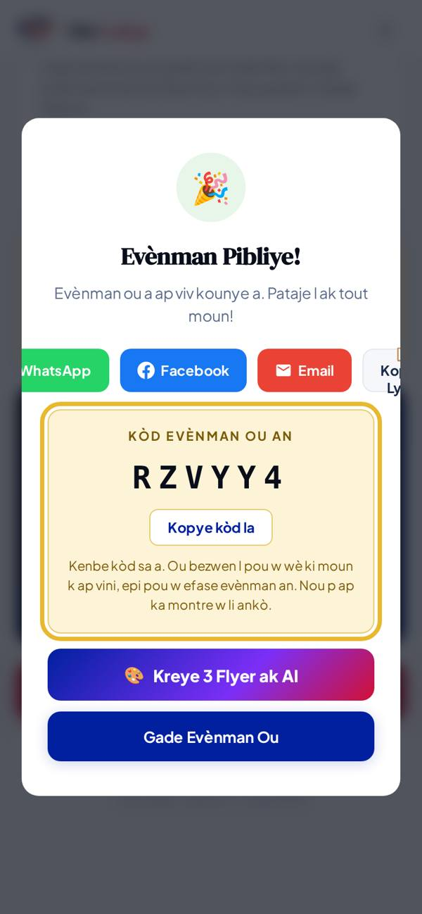
Pataje lyen paj la bay biznis la pou yo voye l bay kliyan yo (bouton WhatsApp sou paj la).
Li louvri lyen an, li wè tout lè yo, li peze + sou lè li vle, epi "Achte Tikè".
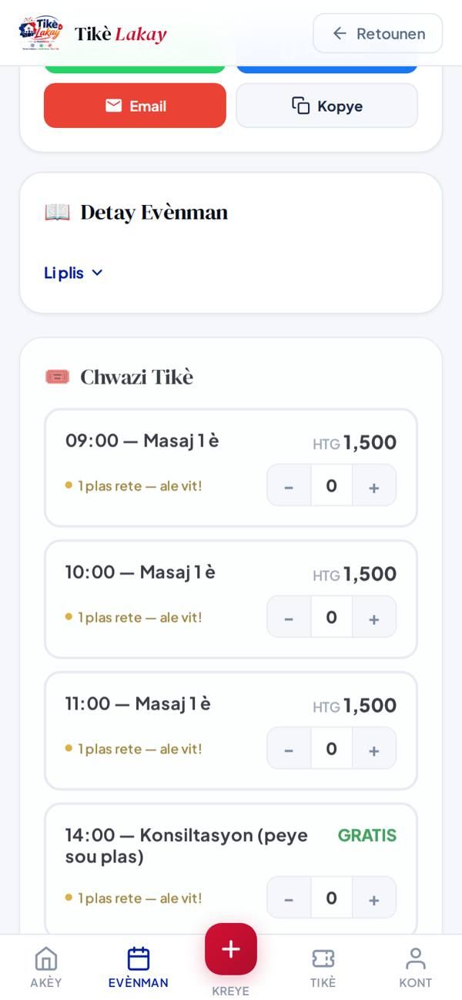
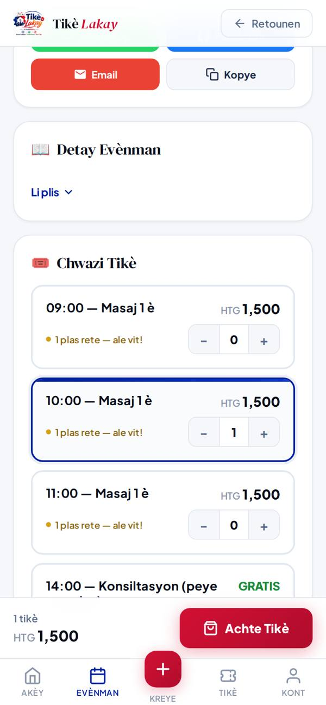
Li mete non li, telefòn li (imel si li genyen), li tcheke kare "VANT FINAL", epi li peye ak MonCash, NatCash oswa Kat. Li peye frè sèvis 7.5% anplis.
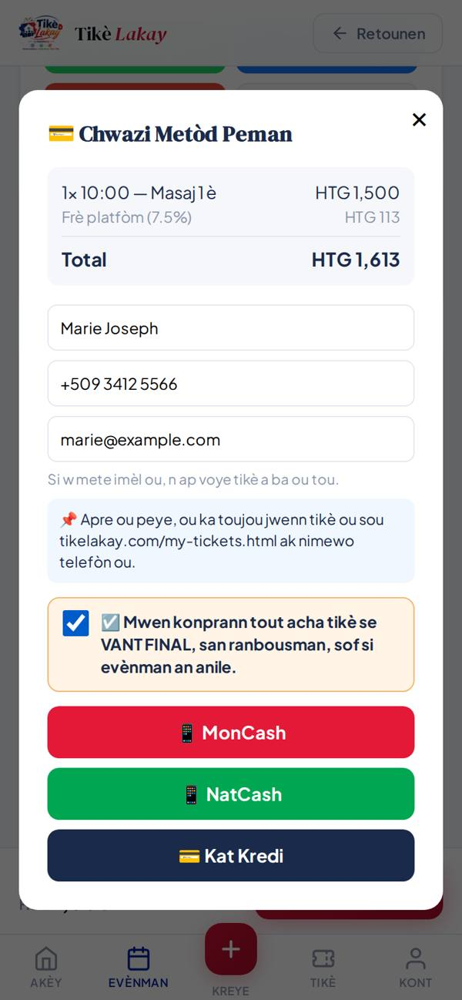
Li wè KONFIME touswit. QR kòd la parèt 2 èdtan anvan premye lè jounen an (paj la di l a ki lè). Li ka toujou jwenn tikè l sou tikelakay.com/my-tickets.html ak nimewo telefòn li.
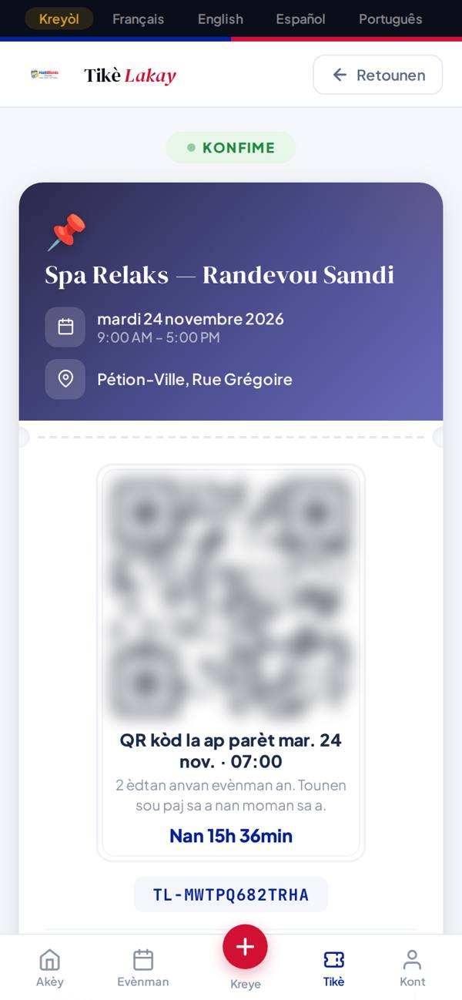
Lè a pran: tout lòt moun wè "Fini — pa gen plas ankò" epi yo pa ka chwazi l.
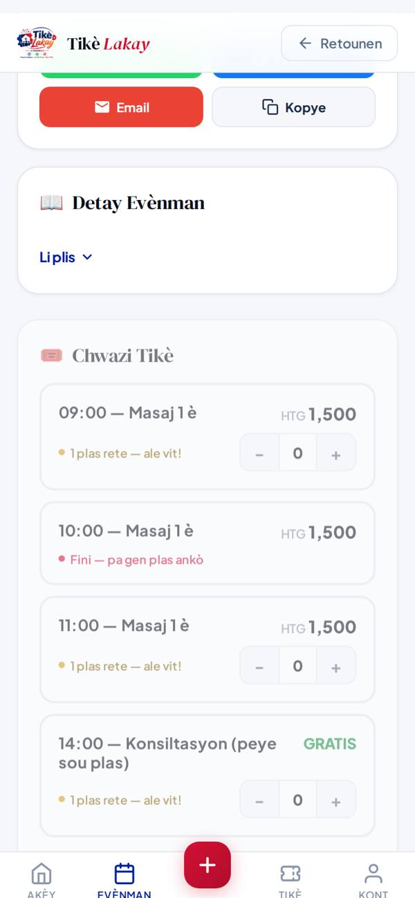
Sou tikelakay.com, peze KONT anba a → paj randevou a → 📊 Vant & moun.
Sou telefòn biznis la (paj la te kreye sou telefòn Jennifer): nan KONT, kare "📲 Evènman ou te kreye sou yon lòt telefòn?" → kole lyen paj la + tape KÒD EVÈNMAN an → "Ajoute l sou telefòn sa a".
Yo wè chak lè, non kliyan an, telefòn li, si li peye, epi kòd pòt la. Yo ka telechaje lis la (Excel).
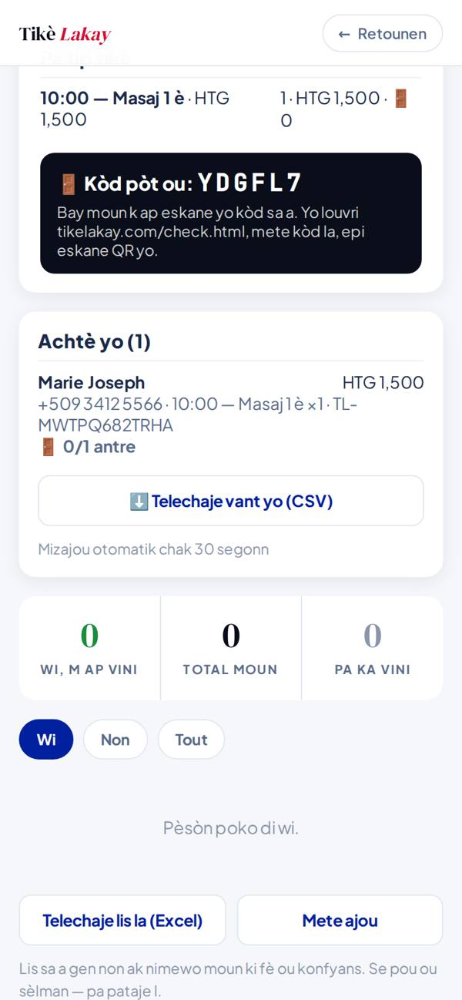
Biznis la louvri tikelakay.com/check.html, mete kòd pòt la, epi eskane QR kliyan an:
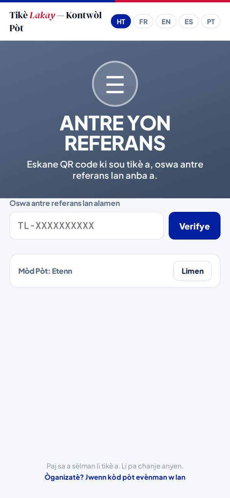